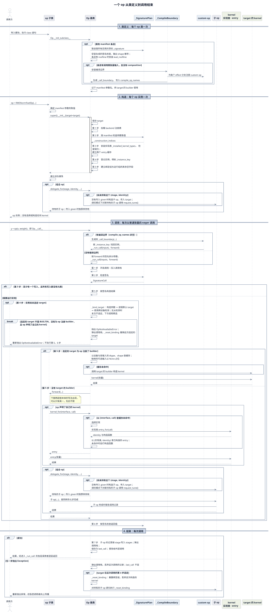

Op 基类开发者指南¶
本指南说明 TileOPs 的 Op 基类：
- 它替每个 op 完成什么；
- op 子类向它声明什么；
- 构造和调用在基类内部经过哪些步骤。
读者是修改 Op 基类及其生成代码的开发者，以及需要了解 op 层内部实现的开发者。
1. 本指南的范围¶
本指南只覆盖 Op 基类。以下主题各有自己的指南；本指南用到其中的结论时引用，不重复其内容。
表 1 相关指南
| No. | 主题 | 指南 |
|---|---|---|
| 1 | • 新增一个 op 的步骤：manifest 条目、op 类的成员、kernel_for 的参数• 注册、测试与 benchmark |
添加一个新 op |
| 2 | • 在 torch.compile 中调用 op• 编译边界的生成条件与冷编译要求 • custom op 与 fake 的生成 |
接入 torch.compile |
| 3 | • kernel 接口与实现的选择 • 新增 kernel • backend 接入 |
op 如何选择 kernel |
| 4 | • manifest 条目的格式 • 从签名生成的检查 |
读写 manifest |
2. Op 与 Kernel¶
运行自己 kernel 的算子分成两个类：
- Op 检查输入，选择 kernel，组装输出。
- 有 manifest 条目的 op 类，类名与条目的 key 相同。
- 供具体 op 继承的中间基类可以没有条目。
- Kernel 是可调用的实现对象，持有在设备上执行的 TileLang 程序与 tile 配置；程序可能在第一次启动时才构建。
组合 op 可以只持有子 op，不声明自己的 kernel，见组合 op。
op 实例构造一次，调用多次：
- 构造时传入：
- manifest 声明的参数；
- 执行策略
target； - 少数 op 还接收 family 自己定义的额外参数，见下文。
- 每次调用时才知道： 调用时传入的张量的 shape 与 dtype。它们由这次调用决定，所以不作为构造参数。
- 没有张量输入的 op，这些信息由构造参数给出。
- manifest 在参数中声明的张量（构造期张量）在构造时传入，例如
LongRoPEFwdOp的rescale_factors；它的 shape 与 dtype 在构造检查中使用。
- kernel： 第一次需要某种特化时构造，然后缓存，之后同一种特化直接重用。in-tree 的 entry 是否重用，由实现的
entry_for返回的 identity 决定；target 构造的 kernel 按调用设备与各输入的 dtype、shape 缓存。见构造与调用 § kernel 缓存。
额外的构造参数： 类属性 injected_parameters 是 manifest validator 的白名单。
- 构造函数中 manifest 没有声明的参数，除执行策略
target外，只有列在这里的才被允许。 - 这些参数由 family 自己定义和使用，不是基类的扩展机制；基类只负责放行它们的名字。
- 目前只有 MoE 的
FusedMoE使用，列出prepare_finalize与experts。
3. op 的生命周期¶
本指南区分三个主语：
- op 类：继承
Op的子类，例如RMSNormFwdOp。 - op 实例：op 类构造出的对象。
- 一次调用：对 op 实例的一次调用。
- op 实例是可调用对象：
Op定义了__call__。 op(x, weight)调用的是Op.__call__，由它进入子类的forward。Op不继承torch.nn.Module。
- op 实例是可调用对象：
一个 op 依次经过三个阶段：
表 2 op 的三个阶段
| No. | 阶段 | 主语 | 触发 | 次数 |
|---|---|---|---|---|
| 1 | 类定义 | op 类 | • 导入 op 所在的模块，执行 class 语句• Op.__init_subclass__ 运行 |
每个 op 类一次 |
| 2 | 构造 | op 实例 | • op = RMSNormFwdOp(normalized_shape=(4096,))• 子类的 __init__ 运行，其中调用 Op.__init__ |
每个 op 实例一次 |
| 3 | 调用 | 一次调用 | • y = op(x, weight)• Op.__call__ 运行 |
每次调用 |
图 1 把三个阶段的关键步骤按时间顺序串起来，调用阶段分为执行与结束两段。

图 1 一个 op 从类定义到调用结束的时序。
图 1 的读法：
- 步骤编号： 构造阶段的「第 n 步」对应构造与调用 § 构造表 1；调用与结束阶段的「第 n 步」对应构造与调用 § 一次调用的七步表 3。
opt框只在条件成立时执行；alt框按条件执行其中一个分支。kernel_for只画到「构造 entry」。 选择实现的细节见 op 如何选择 kernel § 一次调用如何找到 kernel。- 图中只画以普通张量进行的 eager 调用。 以 meta 张量 eager 调用有编译边界的 op 时，生成的 fake 运行签名检查，不进入
_run_call；被 trace 时，没有编译边界的 op 跳过签名检查，有编译边界的 op 由 fake 运行签名检查，也不进入_run_call。两者见构造与调用 § 调用入口。
表 3 各阶段中基类与子类的分工
| No. | 阶段 | 基类完成 | 子类提供 |
|---|---|---|---|
| 1 | 类定义 | • 从 manifest 条目生成签名检查、输出 shape 推导；条目提供 roofline 时生成 eval_roofline• 条目有调用期张量输入、且没有 composition 时，生成 custom op，即编译边界 • 记下 manifest 参数的名字，调用 target 的 builder 时按这些名字传参 |
• 有 manifest 条目的 op 类，类名与条目的 key 相同；中间基类可以没有条目 • 声明 kernel_types、interfaces、delegate_types |
| 2 | 构造 | Op.__init__ 先保存 target，再依次：1. 加载 backend 注册表 2. 按 manifest 检查参数取值 3. 安装实现表并检查契约 4. 登记实例 5. 建立实例状态字段 |
• 直接继承 Op 的：把 manifest 参数赋给同名属性，再调用 super().__init__(target=target)• 经过 family 基类的：按 family 基类的签名传参，由它最终调用 Op.__init__• 之后建立派生属性与子 op |
| 3 | 调用：进入本体之前 | 1. 检查调用是否符合 manifest 签名。 2. 如果这次调用要写的张量都没有元素，就不运行 kernel，直接按签名返回结果。 3. 如果实例还没有 target，按调用设备选定一个。 |
— |
| 4 | 调用：执行 | • 空写时按签名构造结果 • 否则，有 target 的 builder 时运行 target 的 kernel，没有时运行子类的本体 • 本体调用 kernel_for 时：查缓存，未命中时选择实现、构造 entry• 本体调用 delegate_for 时：构造或返回持有的子 op |
• forward• 在其中调用 kernel_for(interface, call) 与 delegate_for(stage, identity, ...) |
| 5 | 调用：本体返回之后 | • 检查返回值 • 把子 op 的调用归入 stage • 保存调用记录 last_call |
— |
| 6 | 调用失败 | • 丢弃这次调用的记录，last_call 不变• target 在这次调用中选定时：撤销 target，丢弃已构造的 kernel，逐层撤销子 op 的绑定 • target 在之前的调用中选定时：target、kernel 与子 op 都保留 |
— |
表 3 的说明：
- 调用各行描述 eager 调用。 在
torch.compile中被 trace 时，没有编译边界的 op 跳过签名检查，见构造与调用 § 调用入口。 - 构造阶段不碰 kernel。 它不选择、也不构造任何 kernel，不读取设备属性。
- 选择实现与构造 kernel 在调用时进行。 要等张量的 dtype、shape 与设备都已知：
- 运行 in-tree kernel 时，由
kernel_for选择实现并取得 entry； - 由 target 服务时，基类调用 target 的 builder 构造 kernel 并缓存。
- 运行 in-tree kernel 时，由
Op.__init__的各步为什么放在构造时，见构造与调用 § 构造。
另有两类职责不属于某一次调用：
- roofline。
eval_roofline()对最近一次调用的记录求值。- FLOPs 不在 fp32 CUDA core 上计算的子类覆盖
roof_key()。 - 见调用记录与调优 § roofline。
- 调优与枚举。
request_tune()是进入调优模式的唯一方式：它把 op 及其子 op 置为调优模式，并向iter_kernels()枚举到的已构造 kernel 发出调优请求；之后构造的 in-tree entry 也按该模式调优；请求到不了 target 时发出警告。iter_kernels()等方法枚举已构造的 kernel。- 见调用记录与调优。
由此得到子类遵守的三条规则：
- 不重复检查。 子类不重复签名已经声明的检查，也不检查设备类型。
- 本体运行时，签名检查已经通过。
- kernel 自己声明能在哪些设备上运行。
- 不自建缓存。 子类不维护 kernel 缓存，也不以某个属性是否为空来决定是否构造 kernel；缓存由
kernel_for负责。 - 子 op 只经
delegate_for持有。 未经持有的子 op 完成调用时，父调用报错。
4. 基类的成员¶
基类的成员按使用者分成三层：
- 对外接口： 调用 op 的代码使用，见表 4。
- 对内接口： op 子类声明或调用，见表 5。
- 内部实现： 子类不调用，也不覆盖，见本节末尾。
表 4 对外接口：调用 op 的代码使用
| No. | 成员 | 作用 | 详见 |
|---|---|---|---|
| 1 | 构造参数 target |
执行策略，每个 op 都接收 | 构造与调用 § target 与实现表 |
| 2 | __call__ |
• 调用 op：调用方写 op(...)• 参数由子类的 forward 决定；调用方不直接调用 forward |
构造与调用 § 调用入口 |
| 3 | serving_target |
这个实例选定的 target | 构造与调用 § target 与实现表 |
| 4 | last_call、eval_roofline() |
最近一次完成的调用，及其 (flops, bytes) |
调用记录与调优 § last_call |
| 5 | request_tune()、kernel_config() |
调优，及读取所用配置 | 调用记录与调优 § 调优 |
| 6 | iter_kernels()、built_entries(interface)、held_delegates() |
枚举已构造的 kernel、entry 与子 op | 调用记录与调优 § 枚举 |
表 5 对内接口：op 子类声明或调用
| No. | 成员 | 作用 | 详见 |
|---|---|---|---|
| 1 | Op.__init__(*, target=None) |
• 子类赋值 manifest 参数之后，以 super().__init__(...) 调用• 派生属性与子 op 在它之后建立 |
构造与调用 § 构造 |
| 2 | kernel_types、interfaces |
子类的 kernel 接口与实现 | 构造与调用 § kernel 缓存 |
| 3 | injected_parameters |
• manifest validator 的白名单：构造函数在 manifest 参数与执行策略之外允许的参数名 • 参数本身由 family 定义和使用，不是基类的扩展机制 |
构造与调用 § 构造 |
| 4 | dtype |
• 基类声明的默认值 None• 接收 dtype 构造参数的子类覆盖它 |
构造与调用 § 构造 |
| 5 | forward |
计算本体，每个 op 都只写这一个方法；有编译边界时，基类经生成的 _call_boundary 在 custom op 内运行它 |
构造与调用 § 调用入口 |
| 6 | kernel_for(interface, call)、key_for(interface, call) |
• kernel_for 取得服务这次调用的 entry• key_for 只返回选中实现的 key，不构造 entry；测试用它检查选择结果 |
构造与调用 § kernel 缓存 |
| 7 | delegate_types、delegate_for(stage, identity, ...) |
声明并持有子 op | 组合 op |
| 8 | roof_key()、eval_roofline_read_bytes()、roofline_data_terms() |
roofline 中可由子类覆盖的部分 | 调用记录与调优 § roofline |
内部实现：
- 包括
_run_call、_reset_binding、调用栈，以及生成签名检查的_SignaturePlan、生成编译边界的_CompileBoundary。 - 这些成员以下划线开头，子类不调用，也不覆盖。
- 见构造与调用与类结构与实例状态。
从 manifest 条目生成、子类不编写的成员： 签名检查、_infer_output_shapes、eval_roofline（条目提供 roofline 时）、_call_boundary（有编译边界时），以及编译边界的 custom op。
5. 本指南的页面¶
表 6 页面
| No. | 页面 | 内容 |
|---|---|---|
| 1 | 构造与调用 | • Op.__init__• 调用入口、一次调用的七步 • target 与实现表 • kernel 缓存 • 失败与撤销 |
| 2 | 组合 op | • 子 op 的声明与持有 • 子 op 的调用如何归入父调用 |
| 3 | 调用记录与调优 | • last_call• roofline • 枚举 • 调优 |
| 4 | 类结构与实例状态 | • 类图 • 生成代码的结构 • 实例状态的分组 • 新增内容时基类的保证 |